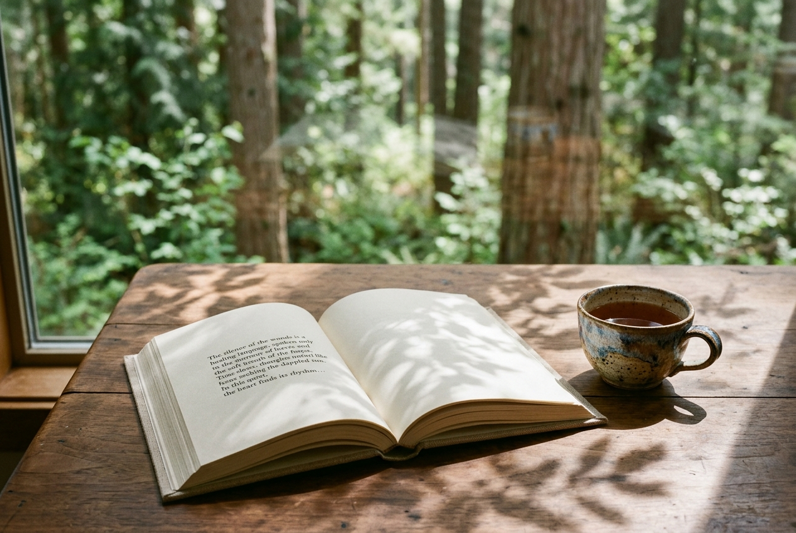

Today's Hidden Gem
·
Connection
The CARE Framework for Connecting with Others
Discover four Scripture-rooted habits (Curiosity, Acceptance, Reach out, Empathy) for truly connecting with coworkers, family, and friends.
Read Guide